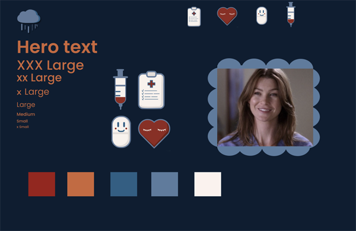

TEMA 03
GRUNDLÆGGENDE UX/UI
GRUNDLÆGGENDE UX/UI
GRUNDLÆGGENDE UX/UI
I Tema 03 blev vi introduceret til UX-metoder, præsentationsteknikker og formidling af testresultater. Opgaven involverede udvikling af en side om et selvvalgt emne, hvor vi anvendte basale metoder, principper og teknologier til at designe den digitale brugergrænseflade. Dette inkluderede forskellige trin i designprocessen såsom research, indsamling af inspiration og udvikling af moodboards.
Vi fik erfaring med at teste vores sider ved hjælp af metoder som Lighthousetest og 5-second test. Disse testmetoder blev senere anvendt i tema 05, hvor vi arbejdede med et virksomhedssite og skulle redesigne en eksisterende side. Her brugte vi eksempelvis Lighthousetest til at evaluere vores kodning og BERT-testen til at få indblik i brugerens oplevelse af brugergrænsefladen.
Afslutningsvis skulle vi præsentere vores opgave, hvilket gav os indsigt i, hvordan man formidler procesdokumentation, produktet samt de tests, vi havde udført i løbet af udviklingsprocessen.
Se løsningen hér
